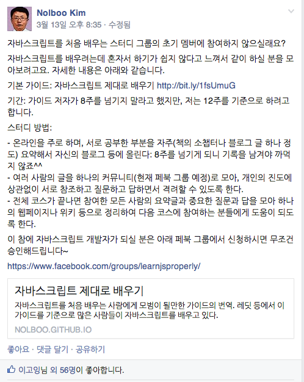

자바스크립트 제대로 배우기 - 0. 준비
처음 시작은 페이스북 생활코딩 그룹의 김놀부 님의 글로부터 시작되었다.
 (https://www.facebook.com/groups/codingeverybody/permalink/733097320064140/?stream_ref=21)
그동안 혼자서 자바스크립트 공부를 계속 하긴 했지만, 꾸준히 계속 하지 못했었고 완전히 습득하지 못했기 때문에 스터디에 대한 필요성을 느끼고 있었다. 그래서 "자바스크립트 제대로 배우기" 그룹에 가입하게 되었다.
김놀부님이 처음 보고 번역하셨던 자바스크립트 제대로 배우기(원본 글 링크) 의 커리큘럼을 바탕으로 6~8주간의 개인 공부를 진행하는 것이다. 오프라인으로 모여서 같이 해나가면 더 좋겠지만, 기본적으로는 온라인으로 주어진 분량을 계속 한 후에 자신의 블로그나 위키 등의 공간에 정리를 하는 것을 스터디의 원칙으로 삼고 있다.
스터디 교재로는 2가지 교재 중 1개를 권하고 있는데
자바스크립트 완벽 가이드 6판 (JavaScript Definitive Guide 6th edition)
- 연구실서 구매해서 1/4 정도 보다가 조금 이해가 힘들어서 그만뒀었는데.. 번역이 약간 문제가 있어서 사람들 불만이 많았는지 현재는 절판된 상태이다.
- 김놀부님께서 인사이트 트위터 계정으로 문의하여 현재 재고로 남아있는 6판을 할인가에 구매하면 6판 새 번역본이 나오면 택배비만 받고 다시 보내준다는 답변을 받으신 것으로 안다. 관심 있으면 링크를 참고하자.
프론트엔드 개발자를 위한 자바스크립트 프로그래밍(JavaScript for Web Developers, 니콜라스 자카스 저 - 링크)
- 난 이 책을 선택했다. 자바스크립트 완벽 가이드도 두껍지만 이것도 만만치 않은 1000페이지가 넘는 책이다. 개인적으로 생각하기에 위 책보단 더 잘 풀어썼다고 생각해서 이책을 고르게 되었다.
공부를 하기로 결정한 후엔 빠른 책 주문으로 벌써 책을 받았다. 하지만 여러가지 바쁜 일들이 존재해서 아직 시작하지 못했다... ㅠㅠ
이번 주말을 시작으로 해서 공부를 시작해 보기로 하고 오늘은 이만..